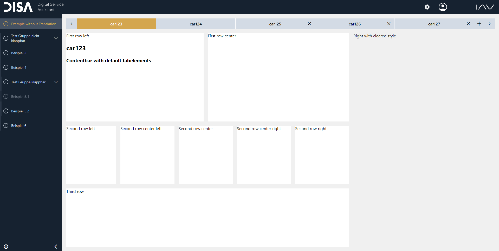

Color and theme (dark / light mode) information is stored and provided by the React context called ColorSettings context. The ColorSettings context`s provider component is embedded inside the ColorProvider component. The ColorProvider itself is contained in GlobalDataLayer. Your interface to the ColorProvider component is the colorSettings property of the GlobalDataLayer component. This property will be explained later on.
Using these options you are able to set custom colors (especially for framework components). Furthermore, the ColorSettings context provides you the information whether the dark mode is activated. This allows you to implement a dark mode four your components.
All colors are exported by the framework's contstants file. The following code snippet shows you how to import these colors:
Example exported color
import {BLUE0} from "@iavofficial/frontend-framework/constants";
Besides providing the colors as JS constants, all colors are defined as CSS constants within the root and can be used within the css files of the project. The following code snippet shows you how to use these colors inside css files:
Example exported css constants and variables definition
// Example for exported color by the framework:
:root {
--blue-0: #001a54;
}
.your-class {
color: var(--blue-0);
}
The framework provides CSS classes for styling your components. This is inspired by PrimeReact. The classes are defined in the globalColors.css file and globally exported. The following code snippet illustrates the structure of these classe's names.
Global CSS colors
/* BACKGROUND CLASSES*/
.bg-white-1{//because of nameconflicts with primereact this name is an execption
background-color: var(--white);
}
.bg-blue-0{
background-color: var(--blue-0);
}
/* COLOR CLASSES*/
.color-white{
color: var(--white);
}
.color-blue-0{
color: var(--blue-0);
}
Using the colorSettings property you can pass an object of the following structure:
export interface ColorProviderProps {
colorOptions?: ColorOptions; // Options to overwrite the default framework component's default colors.
disableCustomColorsForLightMode?: boolean; // Option to disable your color settings for the light mode.
disableCustomColorsForDarkMode?: boolean; // Option to disable your color settings for the dark mode.
}
If you want to overwrite the colors of framework components you can do so using GlobalDataLayer's colorSettings property. The colors should be defined in HEX representation. The following code snippet shows the options object to overwrite the default colors. The specific interfaces are listed later on.
Interface colorObject
export interface ColorOptions {
header?: HeaderColorOptions;
navbar?: NavbarColorOptions;
contentArea?: ContentAreaColorOptions;
contentbar?: ContentbarColorOptions;
contentCell?: ContentCellColorOptions;
authenticationView?: AuthenticationViewColorOptions;
}
The following interfaces show that most settings are divided by the state of the corresponding element: default, hovering and active.
Using these options you can define the colors of the main view's header.
Interface HeaderColorType
export interface HeaderColorOptions {
backgroundColor?: string;
settingsIconColor?: string;
userIconColor?: string;
}
Using these options you can define the colors of the main view's navigation bar.
Interface NavbarColorType
export interface NavbarColorOptions {
backgroundColor?: string;
navbarCollapseArrowColor?: string;
legalDocumentsIconColor?: string;
scrollbarColor?: string;
content?: TabColorOptionsOptional; // Color settings for the navigation tabs
}
export interface TabColorOptionsOptional {
insideActiveGroupColor?: string;
default?: {
tabBackgroundDefaultColor?: string;
tabFontDefaultColor?: string;
tabIconDefaultColor?: string;
groupBackgroundDefaultColor?: string;
groupFontDefaultColor?: string;
groupIconDefaultColor?: string;
groupArrowDefaultColor?: string;
};
hover?: {
tabBackgroundHoverColor?: string;
tabFontHoverColor?: string;
tabIconHoverColor?: string;
groupBackgroundHoverColor?: string;
groupFontHoverColor?: string;
groupIconHoverColor?: string;
groupArrowHoverColor?: string;
};
active?: {
tabBackgroundActiveColor?: string;
tabFontActiveColor?: string;
tabIconActiveColor?: string;
groupBackgroundActiveColor?: string;
groupFontActiveColor?: string;
groupIconActiveColor?: string;
groupArrowActiveColor?: string;
};
}
Using these options you can set the colors of the content area:
ContentColorType
export interface ContentAreaColorOptions {
backgroundColor?: string;
}
Using these options you can set the colors of the tabs of the content bar:
ContentbarTabColorType
export interface ContentbarColorOptions {
backgroundColor?: string;
iconDefaultColor?: string;
iconHoverColor?: string;
buttonDefaultColor?: string;
buttonHoverColor?: string;
tabs?: ContentbarTabColorType; // Color settings of the tabs
}
export interface ContentbarTabColorType {
backgroundDefaultColor?: string;
backgroundHoverColor?: string;
backgroundActiveColor?: string;
textDefaultColor?: string;
textHoverColor?: string;
textActiveColor?: string;
iconDefaultColor?: string;
iconHoverColor?: string;
iconActiveColor?: string;
}
Using these options you can set the colors of content cells:
export interface ContentCellColorOptions {
backgroundColor?: string;
}
Using these options you can set the colors of the authentication view:
Interfaces ContentElements
export interface AuthenticationViewColorOptions {
headerBackgroundColor?: string;
loginButtonBackgroundColor?: string;
loginButtonTextColor?: string;
legalNoticeIconColor?: string;
loginFormBackgroundColor?: string;
fullScreenBackgroundColor?: string; // If fullscreenBackgroundcolor is defined, this color will replace the background image inside the authentication view.
companyTextColor?: string;
inputFieldDescriptionTextColor?: string;
inputFieldBackgroundColor?: string;
inputFieldTextColor?: string;
passwortRequirementsTextColor?: string; // Defines the color of the text for the requirements to set a new password of the AWS authentication view.
themeTogglerColor?: string;
}
export interface AuthenticationColorType {
headerBackgroundColor?: string;
loginButtonBackgroundColor?: string;
loginButtonTextColor?: string;
legalNoticeIconColor?: string;
loginFormBackgroundColor?: string;
fullScreenBackgroundColor?: string;
companyTextColor?: string;
inputFieldDescriptionTextColor?: string;
inputFieldBackgroundColor?: string;
inputFieldTextColor?: string;
passwortRequirementsTextColor?: string; // Defines the color of the text for the requirements to set a new password of the AWS authentication view.
}
To change the color of the PrimeReact components DropDown and ContextMenu you have to overwrite the following css variables:
CSS Properties
:root {
--contextmenubgmaincolor: ... // Background color of the contextsubmenu (settingsmenu and loginmenu).
--highlightcolor: ... // Background color of the contextsubmenu if hovered or selected (settingsmenu and loginmenu).
--textAndIconMainColor: ... // Main text and icon color.
--textAndIconHighlightColor: ... // Text and icon color if hovered or selected.
--dropdownBg: ... // Background of the DropDown component.
--dropdownBgHighlight: ... // Color of the text's highlighting if hovered of selected.
}
Using these options you can for example create a view like the following.

If you want to implement a component including a dark mode you will have to know whether the dark mode is activated at first. You are able to get this information by reading the darkmode attribute of the ColorSettings context. The following code snippet shows an example:
Interfaces ContentElements
import React, { useContext } from 'react';
import { ColorSettingsContext } from 'disa-framework/colorSettingsContext';
import '@iavofficial/frontend-framework/globalColors.css';
export const ExampleComponent = () => {
const colorSettingsContext = useContext(ColorSettingsContext);
return (
<div style={{ width: '100%' }}
className={colorSettingsContext?.darkmode ? 'color-white bg-black' : 'color-black bg-white'}>
ExampleComponent
</div>
);
};
However, deciding which colors should be used regarding the theme inside your components is a bad practice. Instead you should maintain the currently used colors in a central place like the framework does. Consult the framework implementation (especially the ColorProvider component) for further details.
If the user activates the dark mode the "color-theme" html attribute will be set (at html body). This enables you to style your components for the light and dark mode using CSS attribute selectors like so:
.example {
background-color: white;
}
[color-theme="dark"] .example {
background-color: black;
}
This CSS will set a white background for the class "example" if the color-theme is not "dark" (light mode is activated). If the color-theme is set to "dark" (dark mode is activated) it will set the background to black.
To disable the dark mode use the hideColorThemeToggler option inside settingsMenuOptions of the UILayer component. This will prevent the user from changing the theme.